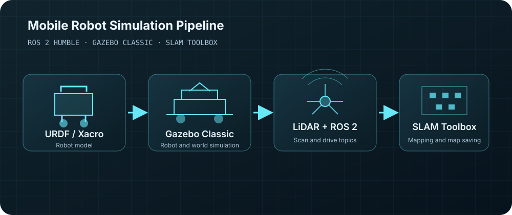

Project Overview_
This project brings together a differential-drive robot model, a simulated environment, and mapping in ROS 2 Humble. The robot is described with URDF/Xacro, visualized in RViz2, and simulated in Gazebo Classic. A 2D LiDAR supplies scan data for SLAM Toolbox to build an occupancy map that can be saved for later use.

URDF/Xacro robot → Gazebo + LiDAR → SLAM Toolbox → 2D map
Key Features_
- Differential-drive robot model using URDF/Xacro
- Robot visualization in RViz2
- Robot simulation in Gazebo Classic
- Differential drive plugin for robot movement
- 2D LiDAR sensor integration
- SLAM Toolbox mapping and map saving with Nav2 Map Server
Tech Stack_
- Ubuntu 22.04
- ROS 2 Humble
- URDF / Xacro
- Gazebo Classic 11
- RViz2
- 2D LiDAR
- SLAM Toolbox
- Nav2 Map Server
- Python